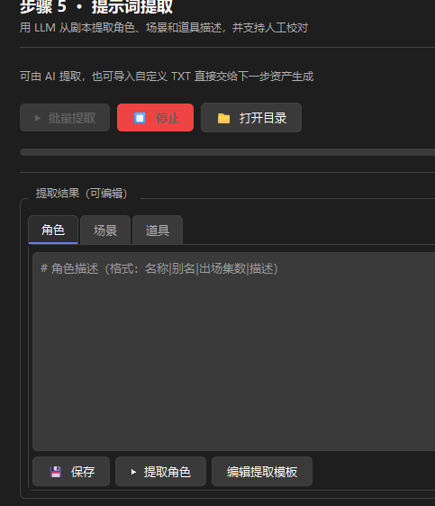
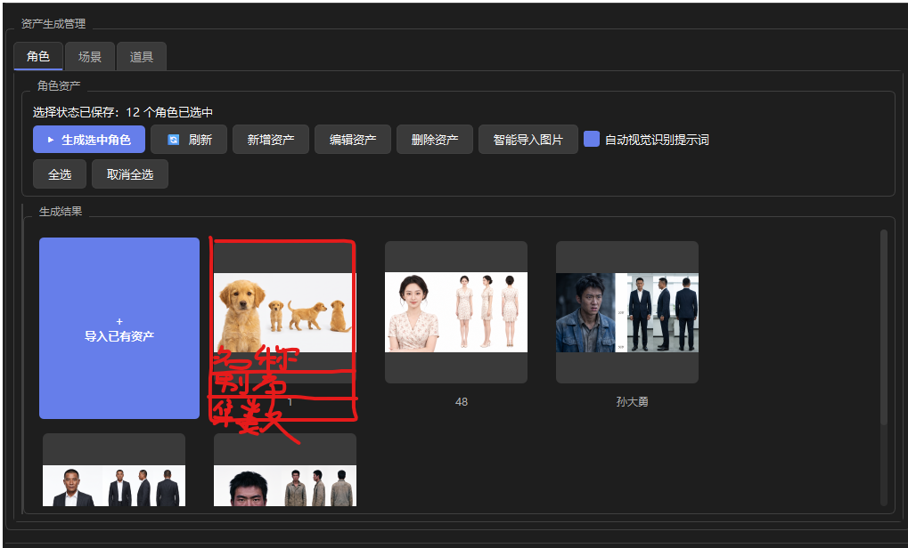
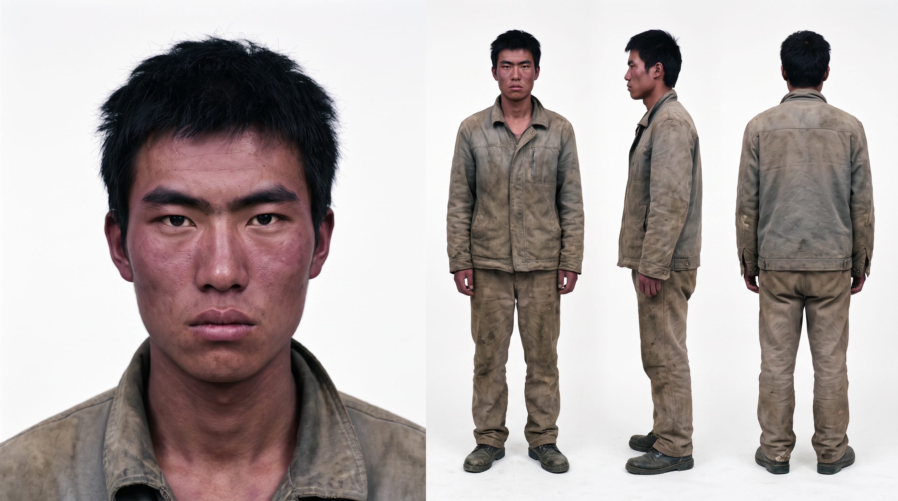

| 文件（项目目录下） | 作用 | 改版后 |
|---|---|---|
assets/character_prompts.txtassets/scene_prompts.txtassets/prop_prompts.txt |
三类资产描述，行格式 名称|别名|出场集数|提示词 |
格式不变，仍由提取 worker 产出 |
assets/asset_descriptions.txt | 三类合并描述（镜头脚本 / 分镜步骤读取） | 继续生成 |
assets/<类别>/<名称>.png | 生成的资产图片 | 不变 |
assets/selections.json | 每个资产的选中状态 / 生成状态 / 图片路径 | 不变，改为记录卡片选中态 |
assets/candidates.json | 候选资产元信息 | 不变 |
steps/step_05_asset_prompt.py）——功能迁移后删除。
卡片数据来自提示词文件 ∪ 图片目录：描述里有但还没图的 → 未生成卡片；有图但描述里没有的（如直接导入的图片）→ 只有名称的已生成卡片。
名称为空或提示词为空时「AI 生成」不可用（菜单置灰并提示原因）。名称即图片文件名。
| 操作 | 目标 | 行为 |
|---|---|---|
| 单击 | 卡片信息区（图以外） | 选中 / 取消选中，高亮边框 + 左上角 ✓，状态写入 selections.json |
| 双击 | 任意卡片 | 打开编辑面板（名称 / 别名 / 集数 / 提示词） |
| 单击 | 未生成卡片图片区 | 弹菜单：AI 生成（名称+提示词必填，缺失则置灰）/ 上传本地图片 |
| 单击 | 已生成卡片图片区 | 弹菜单：查看大图 / AI 重新生成（按当前提示词）/ 替换本地图片 |
| 悬停 | 任意卡片 | 右上角浮现 ×，点击弹确认（"将删除提示词、项目内图片和选择状态"）后删除 |
| 点击 | 「＋添加资产」卡片 | 弹编辑面板（空表单），保存后出现在网格中 |
| 点击 | ▶ 生成选中 | 批量生成所有选中且未完成的卡片（沿用现有 worker 与队列） |
| 点击 | 🔁 重新提取 | 确认后后台重跑三类 LLM 提取（覆盖提示词文本，不动已生成图片） |
移除：左侧资产名称列表、顶部 新增 / 编辑 / 删除资产 按钮。保留：全选 / 取消全选 / 刷新 / 智能导入图片 / 导入自定义 TXT / 编辑提取模板。
.extracting 临时文件，成功才替换正式文件；失败保留已有人工校对的文本，并写 *_extraction_failed.txt 供排查。| 文件 | 改动 |
|---|---|
core/step_registry.py |
删除 asset_prompt 步骤定义；asset 依赖改为 ("project",)；清理排除集合 |
main_window.py |
删除 Step05 的 import / 实例 / 两条信号接线；侧边栏状态同步移除 asset_prompt 键 |
steps/step_06_asset_generation.py |
主要工作量：① AssetCard 重构（状态 / 选中 / 悬停× / 图片区菜单 / 双击编辑）；② CategoryTab 去掉左侧列表，网格数据源改为 提示词文件 ∪ 图片目录，首格固定「+」卡片；③ 新增自动提取队列（复用 workers.AssetPromptWorker）；④ 迁入 TXT 导入与模板编辑功能 |
steps/step_05_asset_prompt.py |
功能迁出后删除文件（TXT 分析 worker、导入提交、模板编辑对话框、parse_custom_asset_text 等移入 step_06） |
steps/step_07~10、step_06* |
界面标题步骤号重排：6→5、7→6、8→7、9→8、10→9（纯显示） |
tests/test_asset_worker_safety.py |
两个 Step05 批量提取用例改测 Step06 提取队列（完成只通知一次 / 取消后不启动下一类） |
tests/test_media_prompt_storyboard.py |
更新 parse_custom_asset_text 与 TXT 导入流程的引用路径 |
不改：workers.py 的提取/生成 worker、core/asset_catalog.py、core/asset_image_import.py、agents/ 下所有生成逻辑 —— 数据层与生成层全部复用。
pytest：现有 122 个用例保持全绿，另更新上述 2 个测试文件。python build.py 出新的便携 exe / zip 分发。| 风险 / 边界 | 应对 |
|---|---|
| 自动提取消耗 LLM 额度（每个新项目 3 次调用） | 只在"三类文件全缺"时触发一次；已有结果绝不重跑 |
| 创建项目后马上切走 / 关闭程序 | 提取在后台线程，切换项目自动取消；已完成的分类结果已落盘，下次打开直接展示 |
| 提取失败（LLM 挂 / 格式错） | 不覆盖已有文本；日志区给出原因；可手动「重新提取」或「导入自定义 TXT」兜底 |
| 卡片很多时网格性能 | 缩略图按需加载（QPixmap 缩放后缓存），短剧项目资产量级（几十张）无压力 |
| 删除 × 误触 | 确认弹窗兜底；删除范围明示（提示词行 + 图片 + 选择状态） |